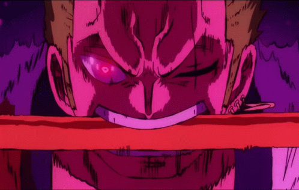

ONIGIRI

Description
This recipe stars Roronao Zoro from One Piece.
Onigiri is Zoro's favorite dish and move, but we're gonna talk about move today.
Ingredients
- Three Legendary Swords
- Armanent Haki
- Swole body
- Green hair(optional)
Steps
- Starve in a marine prison
- Eat dirty onigiris off the ground and join an elastic kid with a straw hat's crew.
- Get stronger with and against your nemesis
- Hold on to your cursed legendary katanas and yell ONI KIRI! against monsters.
- profit.
Return to your crew!